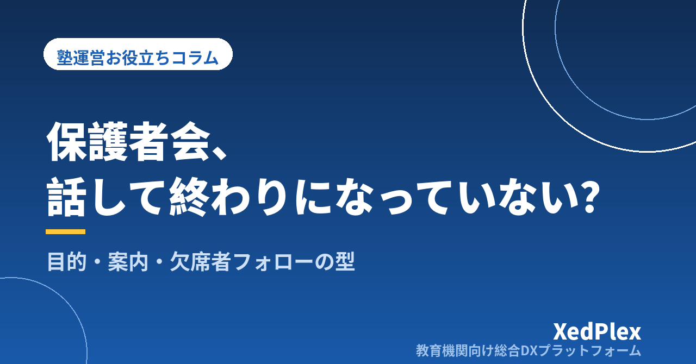

塾の保護者会・説明会の開き方｜目的・内容・案内から当日運営と欠席者フォローまでを型にする段取り

「保護者会を開いたものの、来てくださったのは数名だけだった」「資料を作るのに何日もかかったのに、終わってみると何が伝わったのか分からない」——個人塾の塾長から、こうした声をよく聞きます。授業と事務を一人で回しながら、年に何度かの保護者会まで準備するのは、それだけで大仕事です。
一方で、受験制度の説明や塾の方針、講習の案内など、保護者にまとめて伝えたいことがあるのも事実です。個別面談で一人ずつ同じ説明を繰り返すより、全体で一度伝えたほうが塾長の負担も減ります。この記事では、小さな塾でも無理なく続けられる保護者会・説明会の開き方を、目的の決め方から当日の運営、終わったあとのフォローまで順に整理します。
保護者会が「話して終わり」になる3つの原因
保護者会がうまくいかないとき、多くは次の3つのどれかに当てはまります。
- 目的が欲張りすぎている：方針説明、入試情報、講習案内、料金改定、家庭学習のお願い……と詰め込むと、保護者の記憶に残るのは「長かった」という印象だけになりがちです。
- 塾からの一方通行になっている：塾長が話し続けて質問の時間がないと、保護者は「聞きたかったこと」を持ち帰ることになり、後日の個別の問い合わせが増えます。
- 終わったあとの流れがない：欠席した家庭に情報が届かない、出た質問が記録されない、個別相談につながらない。せっかくの場が、その日限りで終わってしまいます。
逆に言えば、目的を絞る・保護者が話せる時間をつくる・終わったあとの流れを決めておくの3点を押さえるだけで、保護者会はぐっと実りのある場になります。
目的を1つに決め、時期と対象を選ぶ
まず「この会が終わったとき、保護者に何を持ち帰ってほしいか」を1つに決めます。目的が決まると、時期と対象学年は自然に決まります。
| 目的 | 時期の目安 | 対象 | 主な内容 |
|---|---|---|---|
| 今年度の方針を伝える | 新年度の開始前後 | 全学年または学年別 | 年間の流れ、指導方針、連絡方法、お願いしたいこと |
| 入試の仕組みと日程を共有する | 受験学年の初夏〜秋 | 受験学年 | 入試制度の概要、出願までの流れ、塾の面談予定 |
| 講習の内容を案内する | 講習の申込開始前 | 全学年 | 講習の目的、日程、コースの選び方、申込方法 |
| 新しく入った家庭に慣れてもらう | 入塾者が多い時期の後 | 入塾して間もない家庭 | 塾のルール、連絡の受け取り方、家庭学習の進め方 |
小さな塾であれば、毎回全学年を集める必要はありません。伝えたい内容が違う学年は分けて、少人数で短く開くほうが、質問も出やすく、塾長の準備も軽くなります。年間の予定に組み込むときは、面談の時期と重ならないよう調整しておくと保護者の負担が減ります（塾の保護者面談は年何回・いつ行う？、塾の年間事務カレンダーの作り方）。
なお、入試制度や出願日程を説明する場合は、必ず教育委員会や各学校が公表している最新の情報で確認してから資料に載せます。前年の情報をそのまま使うと、変更点を見落とすおそれがあります（受験期の保護者との情報共有、塾はどう進める？）。
内容と時間配分は「60分・3部構成」を基本にする
保護者は仕事や家事の合間に参加します。長くても60分程度に収め、構成を毎回そろえておくと、資料作りも楽になります。
| 時間 | 内容 | ポイント |
|---|---|---|
| 0〜5分 | あいさつと今日のゴール | 「今日お伝えしたいのは○○の1点です」と最初に言い切る |
| 5〜35分 | 本題の説明 | 話す項目は3つまで。1項目10分を目安にする |
| 35〜50分 | 質疑応答 | 事前に集めた質問から答え、その場の質問も受ける |
| 50〜60分 | 今後の予定と個別相談の案内 | 次に保護者にしてほしいこと（申込・面談予約など）を1つ示す |
質問は事前に集めておく
その場で手を挙げて質問するのは、保護者にとって意外とハードルが高いものです。案内と一緒に「当日聞きたいこと」を受け付けておくと、質疑の時間が静まり返ることを防げます。多く寄せられた質問から答えれば、ほかの保護者にとっても役に立つ時間になります。
保護者会で話さないほうがいいこと
- 特定の生徒の成績や様子：名前を出さなくても、話の内容で誰のことか分かる場合があります。個別のことは面談で扱います。
- 他塾や学校への批判：塾への信頼を下げるだけで、得られるものはありません。
- 強い勧誘：講習や追加コースの案内は「選ぶための情報」として伝え、申込は後日でも受け付けると明言しておきます。
料金改定など保護者にとって重い話題を扱う場合は、保護者会だけで済ませず、書面での告知と組み合わせます（塾の月謝値上げ、保護者にどう伝える？）。
案内と出欠確認の段取り
参加が少ない原因は、内容よりも「案内が遅い」「日時が合わない」ことにある場合が多くあります。次のような段取りで進めると、出欠の把握もスムーズです。
- 4週間前：日時と目的を決め、候補の日時を2つ用意する（平日夜と土曜日など）
- 3週間前：保護者へ案内を送る。出欠と事前質問の受付を始める
- 1週間前：出欠の締切。未回答の家庭に一度だけ確認の連絡をする
- 前日：参加予定の家庭へリマインドを送る。資料を印刷・準備する
保護者の皆さま
いつもお世話になっております。○月○日（土）10時から、中学3年生の保護者の方を対象に「高校入試の流れと今後の面談予定」についての説明会を開きます（約60分）。同じ内容を○月○日（水）19時からも行いますので、ご都合のよい回にご参加ください。当日お聞きになりたいことがあれば、出欠のご回答とあわせてお寄せください。ご参加が難しい場合は、後日資料をお送りします。
案内は、保護者が普段見ている連絡手段にそろえて送ります。講師の個人LINEなどで個別に送ると、届いたかどうかの確認が難しくなります（塾の保護者連絡、講師の個人LINE頼みは危険？）。日本語の読み書きに不安がある保護者がいる場合は、やさしい日本語での案内や資料の準備も検討しておきます（外国籍の生徒・保護者への対応、塾はどう備える？）。
当日の運営と、終わったあとのフォロー
当日は役割を分け、記録を残す
講師が手伝える場合は、受付・資料配布・質問の記録などを分担し、塾長は説明と質疑に集中します。一人で運営する場合でも、出席者のチェックと「出た質問のメモ」だけは必ず残しておきましょう。オンラインでの同時配信や録画を行う場合は、映り込みや録画の扱いについて事前に参加者へ伝え、同意を得たうえで行います。参加者の氏名や連絡先などの扱いは、普段の個人情報管理のルールに沿って行います（塾が守るべき生徒の個人情報管理の基本）。
欠席した家庭にも同じ情報を届ける
保護者会の内容は、参加できなかった家庭にも届いて初めて意味を持ちます。会のあと数日以内に、次の3点を全家庭に送ります。
- 当日の資料（または要点をまとめた1枚）
- 当日出た主な質問と回答
- 次にしてほしいこと（申込の締切、面談予約の方法など）
個別相談・面談につなげる
保護者会では、全体に向けた話しかできません。「うちの子の場合はどうなのか」という個別の相談は、面談の予約につなげます。会の最後に面談の日程を案内しておくと、保護者も次の行動が分かりやすくなります。面談の資料づくりは保護者面談の準備を1時間で終わらせる方法が参考になります。
次回のために振り返る
参加者数、出た質問、時間配分が適切だったかを短くメモしておくと、次回の準備がぐっと楽になります。参加者に簡単なアンケートをお願いするのも一つの方法です（塾の保護者アンケートの作り方と活かし方）。保護者会は、普段の連絡や面談とあわせて、保護者との接点の一つとして位置づけると続けやすくなります（塾の保護者連絡、適切な頻度は？）。
まとめ
保護者会・説明会を実りのある場にするコツは、目的を1つに絞り、60分・3部構成で質疑の時間を確保し、3週間前の案内と事前質問で準備し、終わったあとに欠席者へのフォローと個別面談へのつなぎを行うことです。毎回の構成と段取りをそろえておけば、2回目以降は資料の中身を差し替えるだけで準備が進みます。
まずは、次に開く保護者会の「今日お伝えしたいこと」を1行で書き出すところから始めてみてください。
この記事を書いた運営より
私たちは、個人経営・小規模の学習塾向けに、生徒管理・QRコードでの入退室記録・月次請求・保護者へのLINE/メール通知・AIによる学習支援までをひとつにまとめた教育機関向け総合DXプラットフォーム「XedPlex（ゼドプレックス）」を開発・提供しています。初期費用は0円、料金は生徒1名あたり月額300円（税込）から。生徒50名の塾なら月15,000円（税込）です。全国8つの教室で導入されており、導入塾には紹介ホームページの無料作成も行っています。機能の詳細説明はこちら。
XedPlexの詳細を見る